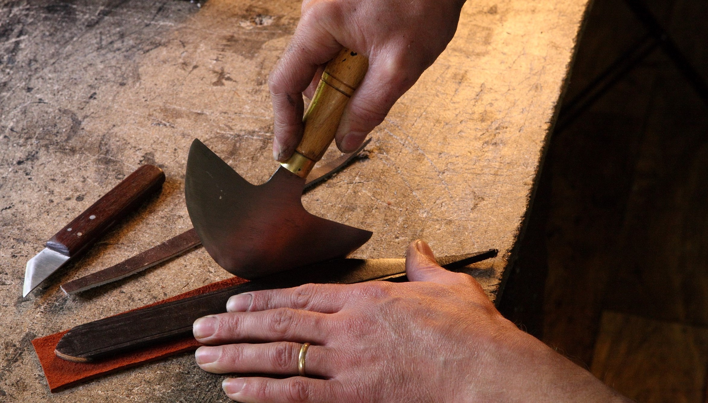
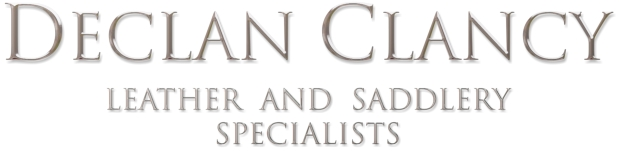
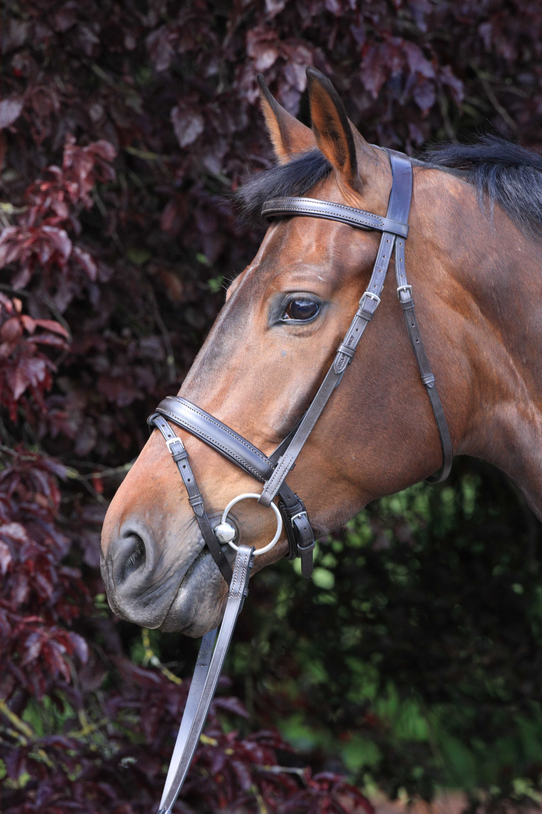
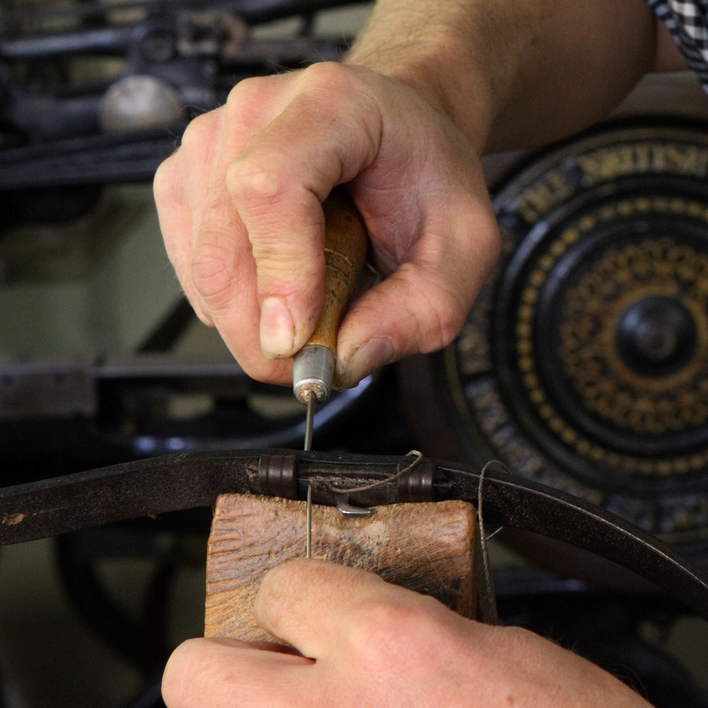

Declan Clancy Saddlery
Declan Clancy Saddlery can provide you with the highest quality products to suit your equestrian needs.



About Us
After completing his training in a traditional saddlery establishment, Declan, with his wife Margaret, established this highly successful business in 1991.
Within a short period of time they became suppliers to the leading horse establishments both home and abroad. Declan prides himself on creating the best quality saddlery products for all of his clients throughout the industry.
Now as an established supplier of both recreational riders and the top stud farms in Ireland, Declan Clancy Saddlery can provide you with the highest quality products to suit your equestrian needs.
Saddlery for every discipline.
Explore a range of handcrafted pieces for eventing, racing, showing and everyday care, all made with the same attention to quality and detail.
Quality
Using the highest quality materials and expert craftsmanship we create products of the highest calibre. Only the finest leather is used throughout this process and is crafted with unequalled attention to detail. This is what allows our products to last a lifetime while maintaining their visual appeal.
View the gallery

Visit Us
Declan produces work accommodating all equestrian disciplines, for high profile clients throughout Ireland and abroad, using only carefully selected leathers and fittings, best suited to his meticulous attention to detail.
A visit to the showroom is most worthwhile, allowing you to see the fine materials and workmanship involved in this time honoured craft. Declan also provides an exacting custom fitting service, identifying how best to accommodate non-standard measurements.
Contact us